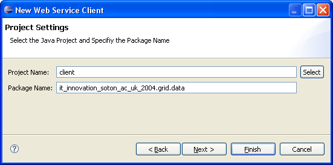

This page describes the WS usage within g-Eclipse and links to a brief introduction of WTP from where the user can continue to the WPT help pages for further study.
g-Eclipse provides a code stub generation wizard that assists in the generation of java code from wsdl files.
Before you start with the wizard, verify that you are in the Developer's Perspective and that you have a Java project in your workspace where you want the generated code to be saved to. Then you may start by invoking the g-Eclipse WS wizard by simply clicking on an available Data Service within your project as depicted in the figure bellow.

Figure 1: Invoking the action to create a Web service client.
The first part of the wizard will show a dialog box where you enter (or verify in case it has been filled out for you) the URI to your WSDL. Refer to Figure 2 to see an example.
Figure 2: Specifying the WSDL URI on the first page of the WS Wizard.
Clicking Next will bring up the second page of the wizard. Here you should enter the path to the directory where Axis2 is installed on your computer. Figure 3 shows this dialog box.
Figure 3: Specifying the Axis2 home directory on the second page of the WS Wizard.
Once again, click Next and you will be taken to the last page of the wizard. Here you are asked to enter the name of the Java project, where you want the generated code to be written into, and also the desired name of the plugin that will appear under the src folder of your project. Refer to Figures 4 and 5 to see an example of the filled out entries on the last page of the wizard and their effect on the created project.

Figure 4: Specifying the project and plugin names on the last page of the WS Wizard.
Figure 5: View of the workbench with the WS wizard generated project.
As Figure 5 shows, the Java project you specified now contains all required dependencies and a plugin with the generated code, which you can readily make use of or adjust to your additional needs.